概要
M5Stack Tab5 (ESP32-P4) を 8 チャンネルのロジックアナライザーにするファームウェアです。5 インチのタッチパネル上で、取り込みからトリガ、波形観察、プロトコルデコード、microSD への書き出しまでが完結します。
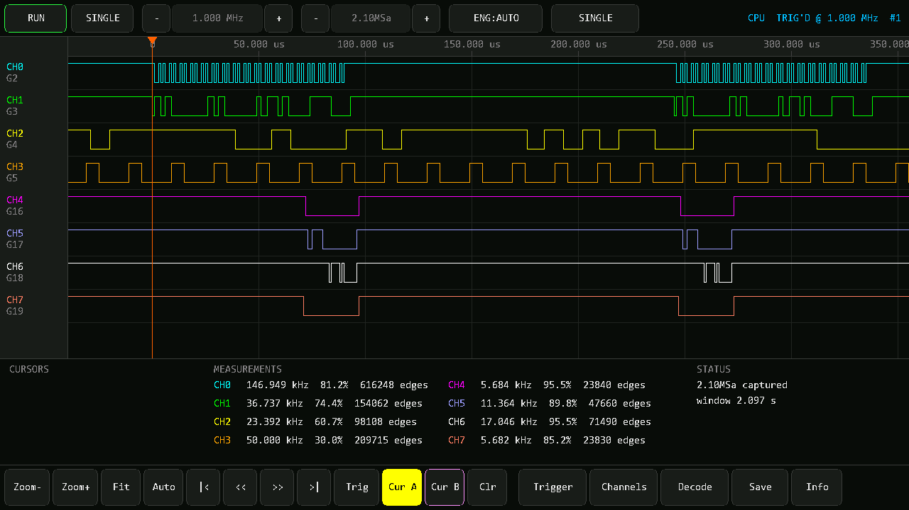
取り込み直後のメイン画面。2.1 MSa の取り込みでも、自動スケールにより信号パターンがそのまま読めます。
できること
80 MSa/s
PARLIO + DMA による実測最大サンプリングレート。8ch 同時。
8 MSa
PSRAM 上の最大取り込み深度。1 サンプル 1 バイト。
3 種
UART / I2C / SPI のプロトコルデコーダを内蔵。
0.00%
1 MHz 基準信号に対する周波数測定誤差 (実測)。
| 分類 | 内容 |
|---|
| 取り込み | 8ch、深度 64 kSa 〜 8 MSa、レート 100 kSa/s 〜 80 MSa/s |
| エンジン | PARLIO (DMA・高速) と CPU (ポーリング・フォールバック) を自動選択 |
| トリガ | ch ごとに Rise / Fall / Both / High / Low。エッジは OR、レベルは AND。プリトリガ 0〜95% |
| 表示 | ピンチズーム、ドラッグパン、LOD による高速描画 (ズームアウトしても 1 サンプルのグリッチが消えない) |
| 測定 | ch ごとに 周波数・デューティ・エッジ数・最小 High/Low 幅 |
| デコーダ | UART (オートボー対応) / I2C / SPI |
| 保存 | CSV (表示範囲) / VCD (全体、PulseView・GTKWave 対応) / デコード結果 / 画面 BMP |
| リモート制御 | USB CDC 経由の行指向 JSON API |
格安ロジアナとの比較
2000 円クラスの FX2LP (CY7C68013A) 系ロジックアナライザーは 8ch / 24 MSa/s を謳います。実測での位置づけは次のとおりです。
| FX2LP 系 (2000円クラス) | 本機 |
|---|
| チャンネル数 | 8 | 8 |
| 最大レート | 24 MSa/s (公称) | 80 MSa/s (実測) |
| 取り込み深度 | USB ストリーミング (ホスト依存) | 8 MSa (本体内) |
| 表示 | PC ソフト必須 | 本体で完結 |
| デコード | sigrok の豊富なデコーダ | UART / I2C / SPI |
デコーダの種類では sigrok に遠く及びません。VCD で書き出せば PulseView に読み込めるので、本体で捕まえて PC で解析、という使い分けが現実的です。
制約
- 入力は 3.3V ロジック専用です。分圧やレベルシフタなしで 5V 以上を入れると壊れます。
- トリガはソフトウェア検索です。バッファを埋めてから条件を探すため、めったに起きない単発イベントは取り逃す可能性があります。
- レートは 160 MHz の整数分周でしか出せません (80 / 53.33 / 40 / 32 / 26.67 / 22.86 / 20 MSa/s ...)。
- アナログ測定はできません。デジタルの High/Low のみです。
セットアップ
プローブの配線、ビルド、書き込みまで。
プローブの配線
プローブは Tab5 の M5-Bus ヘッダ (2×15, 30 ピン) に出します。
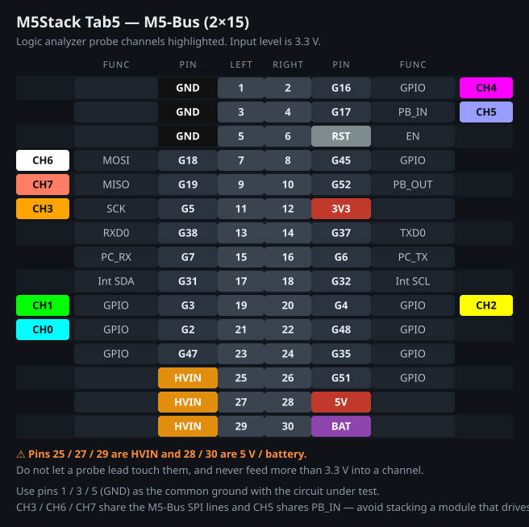
M5-Bus のピン配置。CH0〜CH7 は波形表示と同じ色で示しています。
| ch | GPIO | M5-Bus ピン | 備考 |
|---|
| CH0 | G2 | 21 | 汎用 GPIO |
| CH1 | G3 | 19 | 汎用 GPIO |
| CH2 | G4 | 20 | 汎用 GPIO |
| CH3 | G5 | 11 | M5-Bus SPI_SCK と共用 |
| CH4 | G16 | 2 | 汎用 GPIO |
| CH5 | G17 | 4 | M5-Bus PB_IN と共用 |
| CH6 | G18 | 7 | M5-Bus SPI_MOSI と共用 |
| CH7 | G19 | 9 | M5-Bus SPI_MISO と共用 |
| GND | — | 1 / 3 / 5 | 測定対象と必ず共通に |
入力レベルは 3.3V です。5V や 12V の信号を直結すると ESP32-P4 が壊れます。高い電圧を測るときは分圧か 3.3V のレベルシフタ／バッファを挟んでください。
25 / 27 / 29 番ピンは HVIN、28 / 30 番は 5V とバッテリーです。プローブのリードが触れないよう注意してください。
未接続の ch がノイズを拾わないよう、既定で内部プルアップを有効にしています。何もつないでいない ch は常時 High に見えます。
8ch すべてを 1 つの GPIO バンク (GPIO0–31) に収めてあるので、CPU エンジンはレジスタ 1 回読みで 8ch を取り込めます。ピンを変える場合もバンクをまたがないほうが速度が落ちません。割り当ては include/config.h の先頭 8 行で変更できます。
ビルドと書き込み
PlatformIO と pioarduino の ESP32-P4 対応版を使います。
pio run -t upload
シリアルモニタ:
pio device monitor
初回は toolchain のダウンロードで 5〜10 分かかります。
Windows で Git Bash / MSYS から pio を実行しないでください。ESP-IDF のツールインストーラが MSys/Mingw is not supported で失敗します。PowerShell か cmd から実行してください。
最初の動作確認
外部の信号源がなくても、内蔵のテスト信号発生で全経路を確認できます。USB でつないだまま リモート制御 API から:
gen ch=0 freq=1000000 duty=50
trigger clear=1
config engine=parlio rate=26666666 depth=2097152
single
取り込み完了後に stats を送り、stats[0].freq が 1000000 前後になれば、GPIO マトリクスから PARLIO、DMA、バッファまで正常です。
画面の見かた
1280×720 の画面は 5 つの領域に分かれています。
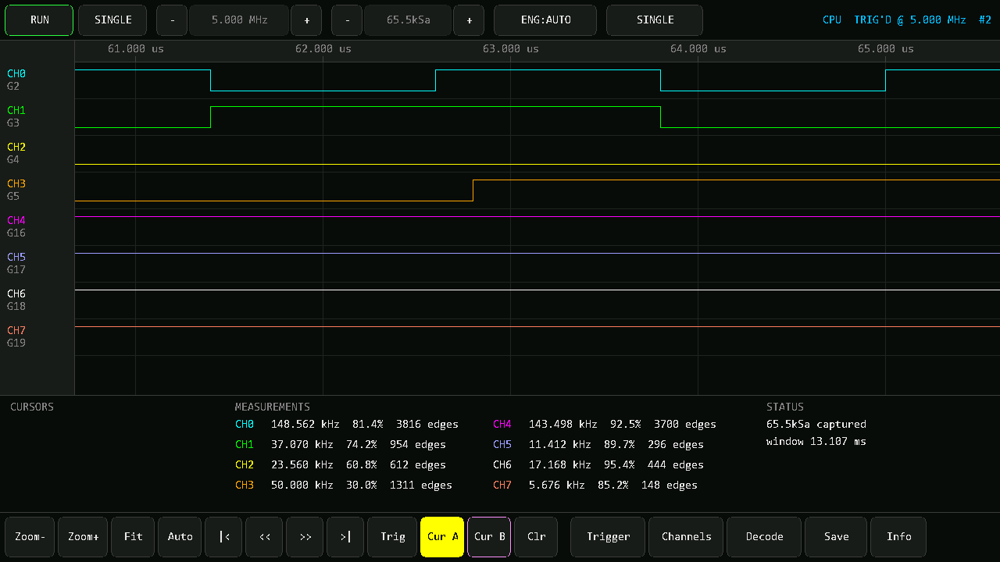
混在信号を拡大したところ。CH0/CH1 が I2C、CH2 が UART、CH3 が PWM、CH4–CH7 が SPI。
| 領域 | 内容 |
|---|
| 上段バー | RUN / SINGLE、サンプリングレート、深度、エンジン、トリガモード、右端に状態表示 |
| 左端の列 | ch 名と割り当て GPIO。inv 表示は論理反転中 |
| 波形エリア | 時間ルーラ、8ch のトレース、デコード注釈 2 行 |
| 中段パネル | カーソル、ch ごとの測定値、状態とメッセージ |
| 下段バー | ズーム / パン / カーソル操作と各種オーバーレイの呼び出し |
右上の状態表示
CPU TRIG'D @ 5.000 MHz #2 のように表示されます。
- エンジン — 実際に使われている取り込みエンジン (
PARLIO / CPU)
- 状態 —
IDLE / SAMPLING / TRIG'D (トリガ検出) / UNTRIG (未検出) / FAILED
- @ レート — 実効サンプリングレート。要求値ではなくハードウェアが実際に出している値
- #n — 取り込み回数
測定値の読みかた
中段パネルの MEASUREMENTS は、取り込み全体に対する ch ごとの統計です。
- 周波数 — 立ち上がり間隔の平均から算出。窓の端で切れたバーストに引きずられません
- デューティ — 完全な 1 周期分だけを対象にした High 比率
- エッジ数 — 取り込み全体での遷移回数
- 周期性がない信号では
N edges min 120 ns のように最小パルス幅が出ます
「サンプリングレートが足りているか」は最小パルス幅で判断できます。最小パルス幅がサンプル周期の 2〜3 倍しかなければ、レートを上げるべきです。
取り込みとトリガ
レートと深度の決め方、トリガ条件の組み立て方。
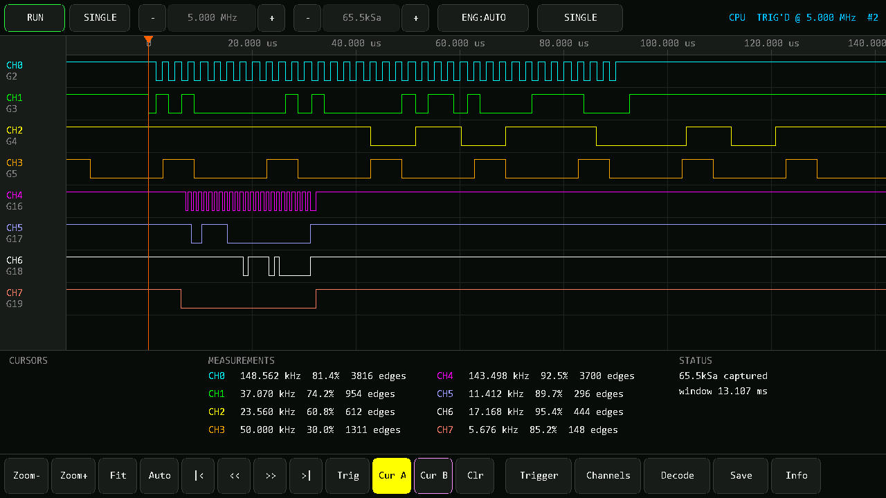
深度 65.5 kSa、5 MSa/s で取り込んだ直後。取り込み全体が画面に収まっています。
レートと深度
観測したい最速のエッジに対して 5〜10 倍 のレートが目安です。取り込み時間は 深度 ÷ レート で、中段パネルの window に出ます。
| 操作 | 効果 |
|---|
レート - + | 100 kSa/s 〜 80 MSa/s。実効値は右上の @ を確認 |
深度 - + | 64 kSa 〜 8 MSa。深度を変えると現在の取り込みは破棄されます (レート変更では破棄されません) |
ENG | AUTO / PARLIO / CPU。AUTO は PARLIO が使えればそちらを選びます |
レートは 160 MHz の整数分周でしか出せません。メニューはその実現可能な値 (80 / 53.33 / 40 / 32 / 26.67 / 22.86 / 20 MSa/s …) で構成してあります。24 MSa/s ちょうどは出せないため、上側の 26.67 MSa/s を使ってください。
トリガ条件
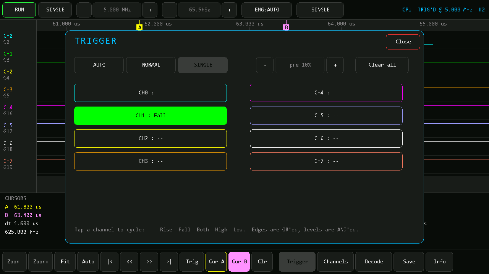
Trigger オーバーレイ。ch をタップするたびに条件が一巡します。
- ch のボタンをタップするたびに
-- → Rise → Fall → Both → High → Low → -- と巡回します。
- エッジ条件どうしは OR、レベル条件どうしは AND、両方あるときは「いずれかのエッジ AND すべてのレベル」。
- 例: CH0=
Rise、CH1=Low → 「CH1 が Low の間に CH0 が立ち上がったら」
- pre % はプリトリガの割合です。25% なら画面の左 1/4 がトリガ前になります。
- Clear all で全 ch を
-- に戻します。条件がひとつも無ければトリガ無し (取り込んだものをそのまま表示) になります。
トリガモード
| モード | 条件が見つからないとき |
|---|
| AUTO | そのまま表示する |
| NORMAL | 5 秒間、取り込みと検索を繰り返す。その間は前の画面が残る |
| SINGLE | 1 回だけ取り込んで停止 |
トリガはハードウェアではなくソフトウェア検索です。バッファを埋めてから条件を探すため、NORMAL モードは「取り込み → 検索 → 見つからなければ再取り込み」を繰り返します。周期的な信号には十分ですが、めったに起きない単発イベントは取り逃す可能性があります。これは「取り込み中は 1 サンプルも落とさない」ことを優先したトレードオフです。
波形操作とカーソル
パン・ズームと 2 本のカーソルによる時間測定。
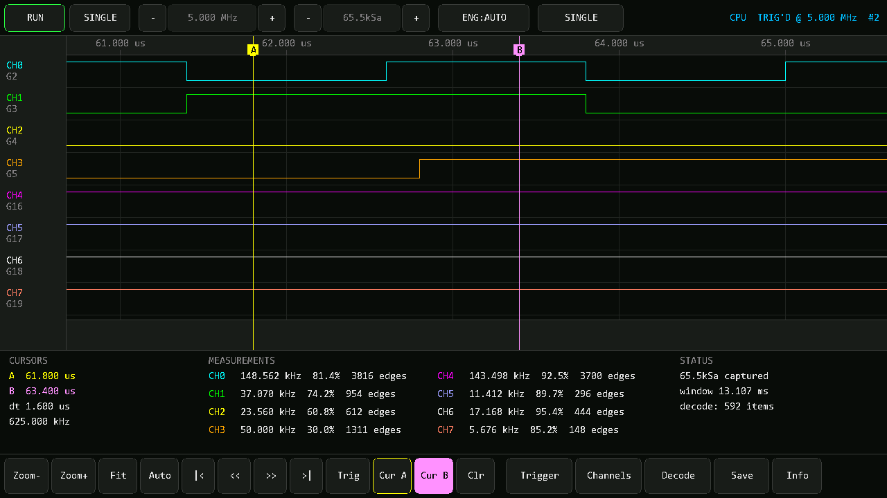
カーソル A / B を置くと、中段パネルに Δt とその逆数 (周波数) が出ます。
| 操作 | 動作 |
|---|
| ドラッグ | 左右にパン |
| 2 本指ピンチ | 時間軸ズーム (指の中点が固定される) |
| タップ | アクティブなカーソルをその位置へ |
| Zoom- Zoom+ | 画面中央を軸に 2 倍ずつズーム |
| Fit | 取り込み全体を画面に収める |
| Auto | 最も細いパルスが約 3 px になるズームに合わせる (取り込み直後の既定) |
| |< >| | 先頭 / 末尾へ |
| << >> | 半画面ずつスクロール |
| Trig | トリガ位置へジャンプ |
| Cur A Cur B | 置きたいカーソルを選ぶ (選択中が反転表示) |
| Clr | カーソルを消す |
取り込み直後の自動スケール
取り込み全体を画面幅に収めると、2 MSa を約 1180 px に描くことになり 1 列あたり 1700 サンプル。どの ch も塗りつぶしの帯になり、パターンが何も見えません。
そこで取り込み後は、捕まえた信号の中で最も細いパルスが約 3 px になるズームを自動で選びます。これは全 ch が形を保てる最も粗い倍率です。全体を俯瞰したいときは Fit、自動スケールに戻したいときは Auto を押してください。
ズームアウトしてもグリッチが消えない理由
8 MSa を約 1150 ピクセルに描くと、1 列あたり 7000 サンプル。単純に間引くと 1 サンプルだけのヒゲが見えなくなり、ロジックアナライザーとして使い物になりません。
そこで取り込み完了時に (OR, AND) の要約ピラミッド を構築しています。OR は「一度でも High だったか」、AND は「ずっと High だったか」を表すので、どれだけズームアウトしても 1 サンプルの尖りが「High と Low の両方あり」= 縦線として残ります。正確さを落とさない間引きです。
チャンネル設定
表示のオンオフと論理反転。
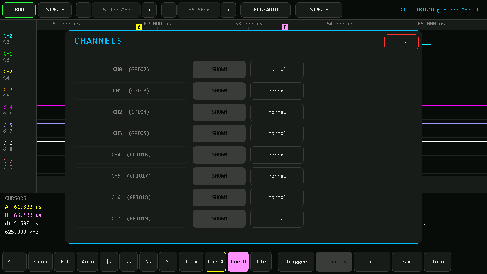
Channels オーバーレイ。ch ごとに表示と論理を切り替えます。
- SHOWN / hidden — 表示のオンオフ。隠すと残りの ch のレーンが広がるので、注目したい数本だけを大きく見られます。
- INVERTED / normal — 論理反転。オープンコレクタや反転プローブ用です。波形・測定・CSV・VCD すべてに反映されます。
ch 名の下に割り当て GPIO が出ます。反転中は左端の列に inv と表示されます。
プロトコルデコード
UART / I2C / SPI を波形に重ねて表示します。
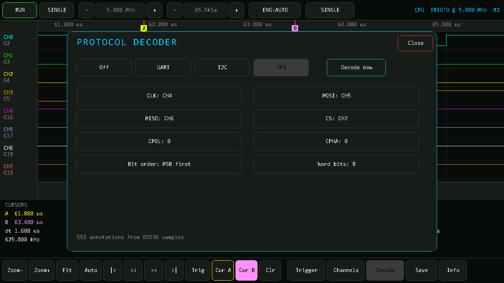
Decode オーバーレイ。設定を変えるたびに自動で再デコードされます。
I2C
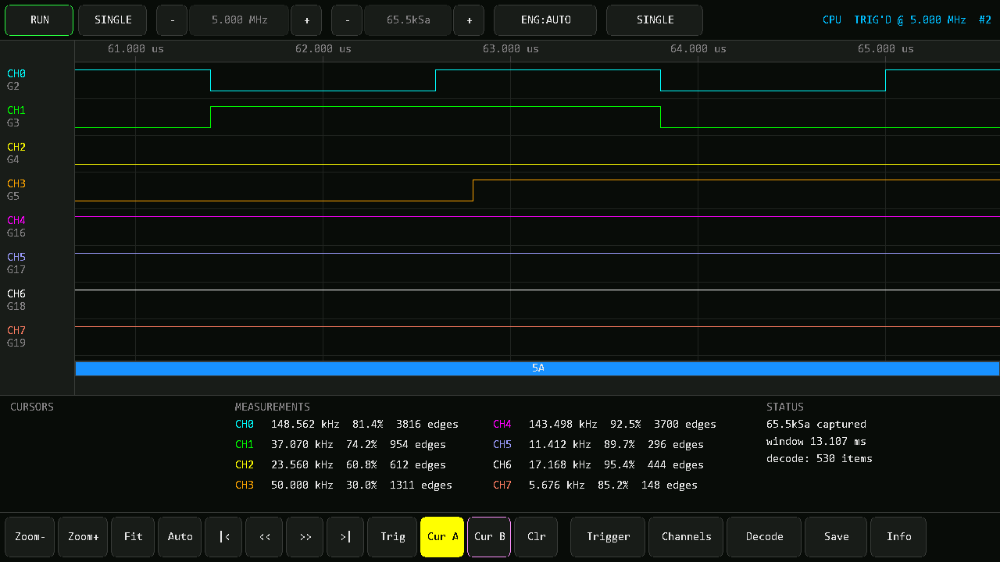
アドレス 50 W に続いてデータ 50 5A 3C。下の行に ACK (A) / NAK (N)。
SCL と SDA の ch を割り当てるだけです。START / Sr (リピートスタート) / STOP、アドレス (R/W 付き)、データバイトが上の行に出ます。
UART
データバイト 4C 'L' 41 'A'。下の行に S (スタート) / T (ストップ)。
| 項目 | 説明 |
|---|
| Line | 信号の ch |
| Baud | auto か固定値。auto は最小パルス幅を 1 ビットとみなして推定します |
| Data bits | 5〜9 |
| Parity | N / E / O |
| Stop bits | 1 / 2 |
| Polarity | idle high が通常の TTL シリアル。反転プローブなら inverted |
| Bit order | 通常は LSB first |
ストップビットが崩れているフレームは赤で T! になり、そのバイトもエラー色で表示されます。そこでビットクロックを信用せず、次のエッジで同期を取り直すので、1 バイトの乱れがストリーム全体を壊しません。
オートボーは「1 ビット幅のパルスが最低 1 つある」ことが前提です。0x00 や 0xFF ばかりのストリームでは外すので、その場合は固定値にしてください。
SPI
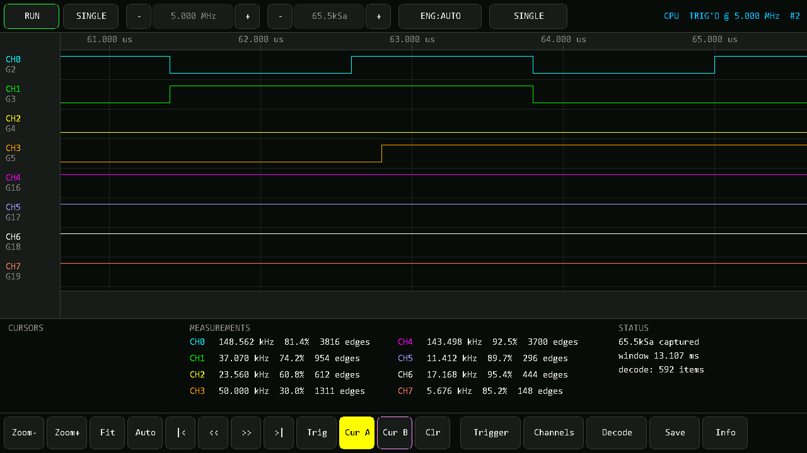
MOSI が上の行、MISO が下の行。CS\ / CS/ は選択・解除。
CLK は必須、MOSI / MISO / CS は -- で無効にできます。CS を -- にすると常時選択として扱います。CPOL / CPHA でサンプルエッジが決まります (CPOL = CPHA のとき立ち上がりでサンプル)。
保存とエクスポート
microSD へ CSV / VCD / デコード結果 / 画面を書き出します。
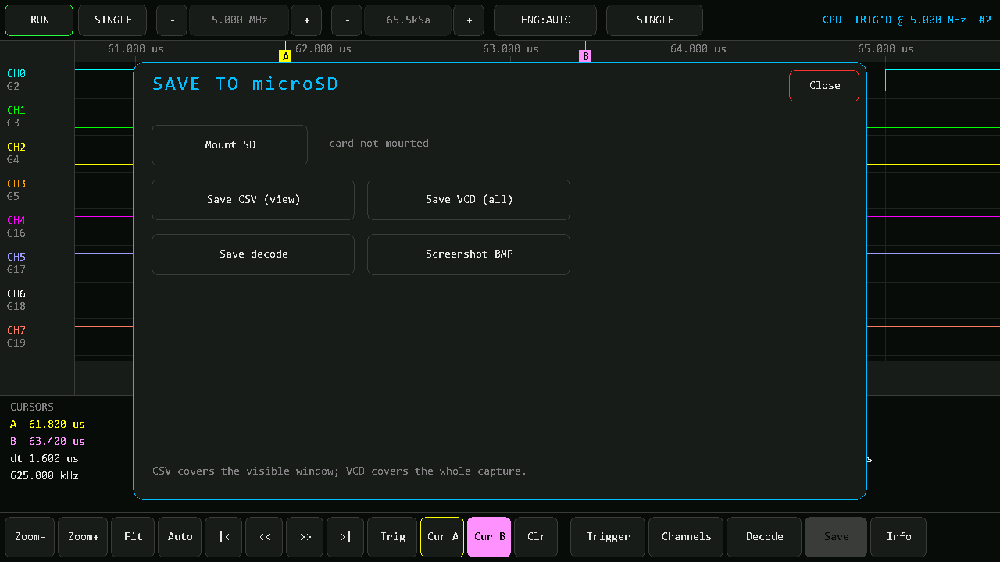
Save オーバーレイ。カードは初回アクセス時に自動でマウントされます。
| ボタン | 出力 | 内容 |
|---|
| Save CSV (view) | /la/capNNNN.csv | 表示範囲のみ、1 サンプル 1 行。時刻はトリガ基準の秒 |
| Save VCD (all) | /la/capNNNN.vcd | 取り込み全体。値の変化点のみ |
| Save decode | /la/decNNNN.txt | デコード結果をタブ区切りで |
| Screenshot BMP | /la/shotNNNN.bmp | 画面全体の 24 bit BMP |
CSV を全体で出さないのは、8 MSa だと数十 MB になり書き込みに何分もかかるためです。全体が必要なら VCD を使ってください。値の変化点だけを書くので桁違いに小さくなります。
PulseView / GTKWave で開く
- VCD を PC にコピー
- PulseView で Import Value Change Dump data を選ぶ
- そのまま sigrok の豊富なデコーダ群が使えます
タイムスケールは「1 サンプルあたり 10 ステップ以上」を保つ最も粗い単位が自動で選ばれるので、レートを変えても分解能が落ちません。
リモート制御 API
USB CDC (書き込みに使うのと同じポート) が行指向の制御 API を兼ねています。1 行送ると JSON が 1 行返る同期プロトコルです。
DTR / RTS を操作しないでください。ESP32 の USB-Serial-JTAG ではこの 2 本がリセットとブートピンに直結しており、トグルするとボードが ROM ブートローダに落ちて応答しなくなります。ポートを開くときは両方 false のままにしてください。
ログ出力は絞ってありますが、ESP-IDF が起動時などに数行出すことがあります。{ で始まらない行は読み飛ばしてください。
コマンドは取り込みの合間に処理されます。取り込み中はブロックするため、掃引の途中で送った stop は次の掃引の前に効きます。
基本
| コマンド | 内容 |
|---|
ping | 疎通確認とファームウェア情報 |
status | 全状態のスナップショット。多くのコマンドがこれと同じ形を返す |
run / single / stop | 連続取り込み / 1 回 / 停止 |
config [rate=Hz] [depth=samples] [engine=auto|parlio|cpu] | rate はメニュー内の最も近い値にスナップ。depth は 2 の冪に切り上げ |
trigger [mode=] [pos=] [chN=off|rise|fall|both|high|low] [clear=1] | トリガ条件 |
channel n=0-7 [on=0|1] [inv=0|1] | 表示と論理反転 |
> ping
{"ok":true,"fw":"0.1.0","api":1,"board":22,"channels":8,"parlio_built":true,"cpu_mhz":360}
波形の読み出し
| コマンド | 内容 |
|---|
stats | ch ごとの周波数・デューティ・エッジ数・最小パルス幅 |
edges ch=N [from=] [count=] | 自動化の第一候補。遷移位置だけを返すので生サンプルより桁違いに小さい。1 回最大 2048 遷移 |
read [from=] [count=] | 生サンプルを 16 進で。1 サンプル 1 バイト、bit N が ch N。1 回最大 4096 |
ann [from=] [count=] | デコード結果。1 回最大 512 件 |
> edges ch=0 count=8
{"ok":true,"ch":0,"from":0,"level":1,"sec_per_sample":3.75e-08,
"edges":[13,27,40,54,67,81,94,108],"next":109,"more":true}
デコーダ
decode kind=i2c scl=0 sda=1
decode kind=uart line=2 baud=auto bits=8 parity=n stop=1
decode kind=spi clk=4 mosi=5 miso=6 cs=7 cpol=0 cpha=0 order=msb bits=8
設定を変えると自動で再デコードされます。mosi / miso / cs は -1 で無効化できます。
内蔵テスト信号発生
gen ch=N [freq=Hz] [duty=0..100] は指定した ch のピンを LEDC で駆動しつつ、そのままサンプリングもできます。外部信号源なしで全経路を検証できます。
> gen ch=0 freq=1000000 duty=50
{"ok":true,"gen":"on","ch":0,"pin":2,"freq":1000000,"duty":50,"res_bits":5}
> gen off=1
res_bits は LEDC の分解能で、周波数が高いほど小さくなります。デューティの量子化幅は 1/2res_bits なので、高い周波数では 50% ちょうどは出ません (res_bits=5 なら 15/32 = 46.9%)。
PowerShell からのヘルパー
$p = New-Object System.IO.Ports.SerialPort "COM6",115200,None,8,one
$p.DtrEnable = $false # 必須: トグルするとブートローダに落ちる
$p.RtsEnable = $false
$p.NewLine = "`n"
$p.Open()
function Send-Cmd([string]$c) {
$p.WriteLine($c)
$sb = New-Object System.Text.StringBuilder
$deadline = (Get-Date).AddSeconds(15)
while ((Get-Date) -lt $deadline) {
$null = $sb.Append($p.ReadExisting())
foreach ($ln in ($sb.ToString() -split "`n")) {
$t = $ln.Trim()
if ($t.StartsWith('{') -and $t.EndsWith('}')) { return $t | ConvertFrom-Json }
}
Start-Sleep -Milliseconds 15
}
}
Send-Cmd 'ping'
全コマンドの詳細は docs/API.md にあります。
アーキテクチャ
取り込みエンジン、トリガ、描画の設計と、その理由。
main.cpp
└─ App アプリ状態機械 + タッチ UI
├─ ISampler 取り込みエンジン抽象
│ ├─ SamplerParlio PARLIO RX + GDMA
│ └─ SamplerCpu GPIO ポーリングループ
├─ CaptureBuffer PSRAM のサンプル列 + LOD ピラミッド
├─ findTrigger() トリガ条件のソフトウェア検索
├─ measureChannels() ch ごとの周波数/デューティ/エッジ
├─ runDecoder() UART / I2C / SPI
├─ WaveformView 波形・ルーラ・注釈・カーソルの描画
└─ Exporter microSD への CSV / VCD / txt / BMP
1 サンプル 1 バイト、ビット N が ch N です。8ch を 1 バイトに詰めることで
- PARLIO の
data_width = 8 とそのまま一致する
- CPU エンジンのパック処理が数命令で済む
- トリガ検索・測定・デコードがすべて「バイト列の走査」になる
という形に揃えました。深度 8 MSa でも 8 MB なので、Tab5 の 32 MB PSRAM に余裕で収まります。
PARLIO エンジン
ESP32-P4 の PARLIO 受信器は、内部で分周したクロックの各エッジで 8 本の入力をラッチし、GDMA でメモリに書き出します。CPU は一切関与しないのでジッタがありません。
設計上のいちばんの制約は、ドライバが 内部 RAM 以外のペイロードを拒否することです。そこで内部 RAM に 191 KiB のリングを確保し、partial_rx_en の無限トランザクションを張ります。ディスクリプタチェーンが循環するので、ハードウェアはブロック間で一度も止まりません。
データの取り出しには 2 つのモードがあり、これが到達レートを決めます。
| モード | 条件 | 特徴 |
|---|
| direct | 深度 ≤ 191 kSa | 取り込み中は一切コピーしない。リアルタイム制約ゼロで、レートはペリフェラルの上限まで出せる |
| stream | 深度 > 191 kSa | ディスクリプタ完了ごとに PSRAM へコピー。コピーがサンプルレートに追従する必要がある |
CPU エンジン
GPIO 入力レジスタを直接読み、config.h のピンマップからコンパイル時に展開したシフト列で 1 バイトに詰めます。既定のピンマップは全 ch がバンク 0 なので、レジスタ読みは 1 回だけです。
ペーシングはディレイループではなく RISC-V のサイクルカウンタで行います。サンプルごとに締切を計算してそこまでスピンし、要求レートがループの限界より速い場合は自然にフリーランに落ちて実測レートを返します。時間軸が嘘にならないのがこの方式の利点です。
割り込みは 2 ms 程度のチャンク単位でマスクします。数秒かかる取り込みの間ずっとマスクすると tick とウォッチドッグが死ぬので、チャンク境界に小さな (報告済みの) 隙間ができることを受け入れています。
トリガ
ハードウェアトリガは無いので、バッファを埋めてから条件を探す方式です。TriggerConfig は 4 つのビットマスク (rise / fall / levelHigh / levelLow) に畳まれるので、検索ループは 1 サンプルあたり数命令で済みます。
検索はプリトリガ分だけ進んだ位置から始めます。こうすると、見つかった位置の手前に必ず要求されたプリトリガ長が確保されます。
LOD ピラミッド
取り込み完了時に (OR, AND) の要約ピラミッドを構築します。レベル 0 は 64 サンプルを 1 エントリに畳み、以降は 2 エントリずつ畳んで倍々。メモリは 2 バイト × (N/64) × 2 ≒ N/16 バイトで、8 MSa でも 512 KB 程度です。
1 px あたり 1 サンプル未満まで拡大したときは、ピラミッドを使わず実サンプルをそのまま階段状に描きます。
実測性能
M5Stack Tab5 実機 (ESP32-P4 rev v1.3 / 360 MHz / PSRAM 32MB) での測定値。
内蔵テスト信号発生で CH0 に 1 MHz 方形波を出し、深度 2 MSa で取り込んだ結果です。
| 要求レート | 実効レート | 取り込み | 1 MHz の測定値 | 誤差 | コピー ISR 占有 |
|---|
| 20 MSa/s | 20.00 | 2097152 | 1.00 MHz | 0.00% | 20% |
| 22.86 MSa/s | 22.86 | 2097152 | 1.00 MHz | 0.00% | 22% |
| 26.67 MSa/s | 26.67 | 2097152 | 1.00 MHz | 0.00% | 26% |
| 32 MSa/s | 32.00 | 2097152 | 1.00 MHz | 0.00% | 31% |
| 40 MSa/s | 40.00 | 2097152 | 1.00 MHz | 0.00% | 39% |
| 53.33 MSa/s | 53.33 | 2097152 | 1.00 MHz | 0.00% | 52% |
| 80 MSa/s | 80.00 | 2097152 | 1.00 MHz | 0.00% | 77% |
2000 円クラスの FX2LP 系ロジアナ (24 MSa/s 8ch) を上回ります。26.67 MSa/s でコピー ISR の占有率はわずか 26%、深度も 2 MSa まで確認済みです。エッジ数も理論値と一致しているため、取りこぼしはありません。
80 MSa/s も動作しますが ISR 占有 77% と余裕がないため、常用は 40 MSa/s 以下を推奨します。占有率が 80% を超えると Info パネルに OVERRUN RISK と表示されます。
内蔵ジェネレータで CH0 に方形波を出し、80 MSa/s・深度 131072 で取り込んだ結果です。
| 発生周波数 | 1 周期あたり | 測定値 | エッジ数 | 判定 |
|---|
| 1.00 MHz | 80 サンプル | 1.00 MHz | 3279 | 理論値と一致 |
| 1.95 MHz | 40 サンプル | 1.95 MHz | 6379 | 一致 |
| 4.91 MHz | 16 サンプル | 4.91 MHz | 16092 | 一致 |
| 9.74 MHz | 8 サンプル | 9.74 MHz | 31908 | 一致 |
| 12.96 MHz | 6 サンプル | 12.96 MHz | 42449 | 一致 |
| 19.44 MHz | 4.1 サンプル | 19.44 MHz | 63695 / 63696 | 2 回連続で一致 |
発生周波数が半端なのは LEDC の分周が小数になるためで、アナライザ側の誤差ではありません (同じ値が繰り返し再現します)。
19.44 MHz より上は未測定です。内蔵 LEDC がそれ以上を生成できず外部の信号源が必要なためで、ペリフェラル側の上限ではありません。
チャンネルマッピングの検証
内蔵ジェネレータで 1 MHz を 1 ch ずつ順に出し、20 MSa/s・深度 131072 で取り込んだ結果です。理論エッジ数は 13107。
| 駆動 ch | GPIO | 反応した ch | 測定値 | エッジ数 |
|---|
| CH0 | G2 | CH0 のみ | 1.00 MHz | 13106 |
| CH1 | G3 | CH1 のみ | 1.00 MHz | 13107 |
| CH2 | G4 | CH2 のみ | 1.00 MHz | 13111 |
| CH3 | G5 | CH3 のみ | 1.00 MHz | 13111 |
| CH4 | G16 | CH4 のみ | 1.00 MHz | 13114 |
| CH5 | G17 | CH5 のみ | 1.00 MHz | 13107 |
| CH6 | G18 | CH6 のみ | 1.00 MHz | 13111 |
| CH7 | G19 | CH7 のみ | 1.00 MHz | 13111 |
チャンネルの入れ替わりもクロストークもありません。トリガも実機で確認済みで、ch3=rise / プリトリガ 25% でトリガ位置 32770 (境界の 32768 直後)、アイドル線に ch5=rise を掛けると -1 (誤発火なし) になります。
CPU エンジンの実力
5 MSa/s を要求して 実測 2.811 MSa/s。200 kHz の信号を 200.06 kHz と測定 (誤差 0.03%) するので、実測レートを返す設計どおり時間軸は正しいままです。1 サンプルあたり約 128 サイクルで、PSRAM への書き込みがコストを支配しています。
CPU エンジンは 2.8 MSa/s 程度が上限とみてください。PARLIO が使えない場合のフォールバックであり、常用するものではありません。
未検証の項目
| 項目 | 状態 |
|---|
| microSD への保存 | 未検証。CSV / VCD / BMP の書き出しコードは一度も実行していません |
| 実機のタッチ操作 | 未確認。UI 操作はシミュレータの合成タッチでのみ検証 |
| 外部回路の実測 | すべて内部ループバック。実際のプローブ配線・GND・信号品質は未検証 |
| 実プロトコルのデコード | 合成波形のみ。ゴミ入力でクラッシュしないことは確認済み |
| 19.44 MHz 超の入力 | 内蔵ジェネレータの限界で未測定 |
呼称について
| 表記 | 値 | 根拠 |
|---|
| サンプリングレート | 80 MSa/s (8ch 同時) | 実測。エッジ数が理論値と一致 |
| 常用推奨レート | 40 MSa/s 以下 | 80 MSa/s はコピー ISR 占有 77% で余裕がない |
| 最小検出パルス幅 | 12.5 ns @ 80 MSa/s | 1 サンプル周期 |
| 測定確認済み入力周波数 | 19.44 MHz | 上記の実測。これ以上は未測定 |
| 実用的な信号周波数 | 8〜20 MHz | 5〜10 倍のオーバーサンプリングを確保する場合 |
格安ロジアナが「24MHz」と名乗るときの 24 はサンプリングレートなので、同じ流儀なら本機は 80MHz 相当です。ただし「80 MHz の信号が測れる」と誤読されるため、80 MSa/s と単位まで書くことを推奨します。
測定上の注意
- 時間軸はハードウェア分周値をそのまま使います。壁時計で測るとアーミングと停止処理の分だけ約 1% 伸びるため、そちらは診断用にのみ表示しています。
- 測定できる信号の周波数はサンプリングレートとは別です。エッジ位置を確実に取るには 5〜10 倍のオーバーサンプリングが必要なので、40 MSa/s なら実用 4〜8 MHz、20 MSa/s なら 2〜4 MHz が目安です。
- CPU エンジンの上限はループ速度で決まり、実測値が表示されます。PARLIO が使えない場合のフォールバックです。
ブラウザシミュレータ
実機なしで UI を動かし、このドキュメントのスクリーンショットを再生成します。
このページのスクリーンショットはすべて、実機と同じ UI コードを WebAssembly でビルドして生成しています。モックアップではありません。WaveformView、App、デコーダ、測定、LOD ピラミッドはファームウェアとバイト単位で同じソースです。
仕組み
web-simulator-for-lvgl の M5GFX 互換バックエンドを使います。互換層はピクセル・矩形・線までしか持たないため、UI が必要とする以下を sim/ で補っています。
sim/sim_gfx.cpp — テキスト描画、角丸矩形、三角形。フォントは Consolas を sim/tools/make_font.py でビットマップ化 (M5GFX の Font2/Font4 と同じ送り幅に合わせてあるので、ラベルがボタンからはみ出しません)sim/shim/ — M5Unified、Arduino、esp_heap_caps、esp_log の最小スタブsim/sim_sampler.cpp — 合成波形を生成する ISampler。I2C / UART / PWM / SPI が同時に走るシーン
UI コードは M5GFX を直接名指しせず include/gfx.h の LaGfx を使うので、ファームウェアとシミュレータで同じソースが通ります。
ビルド
インタラクティブな HTML を生成する:
& D:\github\airpocket-soundman\web-simulator-for-lvgl\lvgl-sim.ps1 build .
build/lvgl-simulator/m5tab5-logic-analyzer.html ができます。サーバー不要でそのままブラウザで開けます。
スクリーンショットを再生成する:
pwsh sim/tools/build_shots.ps1
同じソースをヘッドレスの Node プログラムとしてビルドし、スクリプト化したタッチ操作で 13 枚を docs/img/ に書き出します。スクリプト駆動なので、何度実行しても同じ画像が得られます。
シミュレータで見つかった不具合
スクリーンショットを撮る過程で、実機にも存在する UI バグが 2 件見つかりました。
- オーバーレイの Close を押すとカーソルが置かれる — ボタンが押下を処理したあと、指を離したイベントが波形エリアに素通りしていました。押下を消費したことを記録して解決。
- クリック直後の 1 フレームがボタンの古い状態を描く — ボタン配列を入力処理の前に構築していたため。描画直前に再構築するよう変更。
シミュレータは UI プレビューであって、ボードエミュレータ ではありません。PARLIO、microSD、シリアル API は動きません (Save パネルは「ブラウザには microSD がない」と正直に返します)。
トラブルシューティング
まずは Info パネルを見てください。
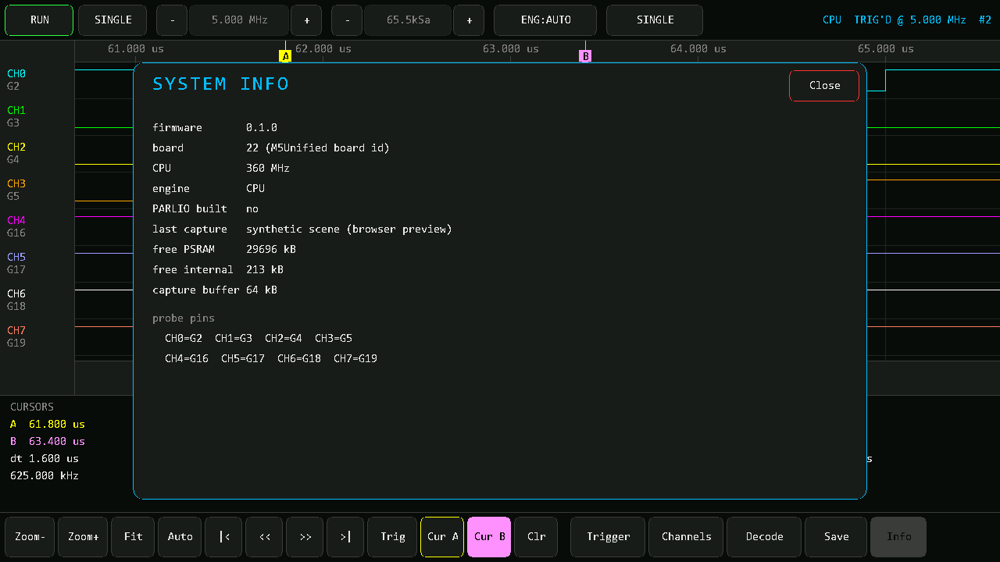
Info オーバーレイ。エンジンの選択結果、直前の取り込みモード、メモリ、ピン割り当てが出ます。
| 症状 | 確認すること |
|---|
| 全 ch が High のまま | プローブが浮いている (内部プルアップが効いている)。GND を測定対象と共通にしたか |
| 波形がガタつく | レートが足りない。信号の 5〜10 倍まで上げる。最小パルス幅の測定値が目安になる |
UNTRIG のまま | トリガ条件が厳しすぎる。Trigger → Clear all で条件を外して素の波形を見る |
| PARLIO が選ばれない | Info で理由を確認。内部 RAM 不足なら深度を下げる |
OVERRUN RISK が出る | レートを下げるか、深度を 191 kSa 以下にして direct モードにする |
| SD に保存できない | Save パネルのエラー表示を確認。FAT32 でフォーマットしたカードを使う |
| 期待より遅いレートしか出ない | ENG が CPU になっていないか。CPU エンジンの上限はループ速度で決まる |
| API が応答しない | DTR / RTS を触っていないか。触るとブートローダに落ちる。esptool --after hard-reset chip-id で復帰 |
| PlatformIO のツール導入が失敗する | Git Bash / MSYS から実行していないか。PowerShell か cmd を使う |